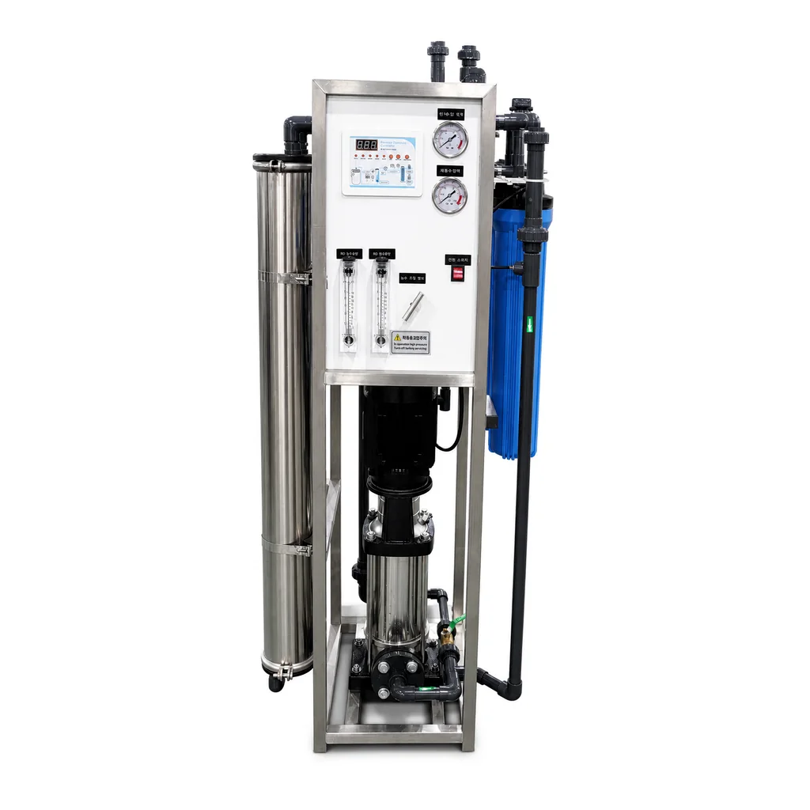

منقي مياه RO
توفر Yuchen Water حلول ترشيح المياه للموزعين والمشاريع والعلامات التجارية.
تعريف المنتج
التطبيقات
المواصفات الفنية
| منقي مياه RO | توفر Yuchen Water حلول ترشيح المياه للموزعين والمشاريع والعلامات التجارية. |
|---|---|
| OEM/ODM | توفر Yuchen Water حلول ترشيح المياه للموزعين والمشاريع والعلامات التجارية. |
| MOQ | OEM/ODM |
OEM/ODM
المنتجات
منتجات ذات صلة


جهاز RO مكتبي للمياه مع تبريد بالضاغط 100G
ترشيح من أربع مراحل: PP + CTO + T33 + RO، مع قدرة RO مقدارها 100G.
إرسال استفسار

جهاز تنقية مياه RO بخمس مراحل بدون مضخة
يعمل هذا الجهاز بضغط مياه الشبكة المستقر دون مضخة كهربائية، ويجمع مراحل PP وUDF/GAC وCTO وغشاء RO وT33 لمشاريع التوزيع والعلامة الخاصة.
إرسال استفسار


آلة مياه RO بإطار 10 بوصات 400G-1200G
10 بوصات PP + 10 بوصات UDF + 10 بوصات PP + RO + T33 كربون لاحق.
إرسال استفسار
آلة مياه RO بإطار 10 بوصات 400G-800G
10 بوصات PP + 10 بوصات UDF + 10 بوصات PP + 3012 RO + T33 كربون لاحق.
إرسال استفسار
جهاز تنقية مياه RO تجاري 20 بوصة 800G/1200G/1600G/2000G
ترشيح RO من خمس مراحل مع فلتر رواسب PP وكربون أولي وغشاء RO وكربون نهائي حسب الطلب.
إرسال استفسار
آلة مياه RO بإطار 20 بوصة 400G-1200G
20 بوصة PP + 20 بوصة UDF + 20 بوصة PP + RO + T33 كربون لاحق.
إرسال استفسار
جهاز تنقية مياه RO تجاري بقارورة كبيرة 400G-800G
مرشح PP كبير مقاس 10 بوصة + RO + T33.
إرسال استفسار
معدات RO مركزية تجارية لتنقية المياه 250-500 لتر/ساعة
PP مقاس 20 بوصة + CTO مقاس 20 بوصة + PP مقاس 20 بوصة + RO.
إرسال استفسار
جهاز RO تجاري فاخر عالي التدفق بقوارير كبيرة لتنقية المياه 800G-1600G
PP كبير القطر مقاس 10 بوصات + فلتر مركب من القطن والكربون كبير القطر مقاس 10 بوصة + RO×2.
إرسال استفسار
جهاز تنقية مياه RO تجاري بخزانة متوسطة مع خزان ضغط مدمج 400G-1600G
PP مقاس 20 بوصة + CTO مقاس 20 بوصة + PP مقاس 20 بوصة + RO + T33.
إرسال استفسار
جهاز تنقية مياه RO تجاري بخزانة صغيرة 400G-1600G
PP مقاس 20 بوصة + CTO مقاس 20 بوصة + PP مقاس 20 بوصة + RO + T33.
إرسال استفسار
معدات RO مدمجة على هيكل واحد مع معالجة أولية بخزانين 1000-3000 لتر/ساعة
خزان رمل أوتوماتيكي + خزان كربون أوتوماتيكي + فلتر دقيق + تناضح عكسي.
إرسال استفسار
معدات RO مدمجة على هيكل واحد مع معالجة أولية بخزانين 250-1000 لتر/ساعة
خزان رمل أوتوماتيكي + خزان كربون أوتوماتيكي + فلتر دقيق + تناضح عكسي.
إرسال استفسار
آلة مياه RO بإطار 10 بوصات بواجهة أمامية 400G-800G
10 بوصات PP + 10 بوصات UDF + 10 بوصات PP + 3012 RO + T33 كربون لاحق.
إرسال استفسار
معدات RO أفقية لتنقية المياه 250 لتر/ساعة
PP كبير القطر مقاس 10 بوصات + فلتر مركب من القطن والكربون كبير القطر مقاس 20 بوصة + RO.
إرسال استفسار
معدات معالجة مياه RO صناعية كبيرة 3-100 طن/ساعة
معالجة أولية من ثلاث مراحل بالإضافة إلى التناضح العكسي؛ يتم تخصيص مسار العملية حسب تحليل المياه.
إرسال استفسار
محطة تناضح عكسي متنقلة على هيكل SUS304 بقدرة 250-500 لتر/ساعة
تكوين مرجعي قياسي 500 لتر/ساعة؛ تتوفر سعة 250 لتر/ساعة وفق تصميم المشروع.
إرسال استفسار
جهاز تنقية مياه RO محمول قابل للتخصيص 400G-800G
فلتر رواسب PP سريع التوصيل مدمج + غشاء RO 3013.
إرسال استفسار

معدات RO بسيطة لتنقية المياه 250-1000 لتر/ساعة
PP مقاس 20 بوصة + CTO مقاس 20 بوصة + PP مقاس 20 بوصة + RO.
إرسال استفسار
معدات RO بخزان واحد مع مرشح PP كبير مقاس 20 بوصة 250-500 لتر/ساعة
مرشح PP كبير مقاس 20 بوصة + RO.
إرسال استفسار
معدات RO متكاملة بخزان واحد لتنقية المياه وتزويدها 250-500 لتر/ساعة
مضخة مياه خام + خزان رمل وكربون أوتوماتيكي + PP مقاس 20 بوصة + RO + خزان مياه نقية من الفولاذ المقاوم للصدأ + مضخة تزويد مياه بتردد متغير.
إرسال استفسار
معدات RO بمعالجة أولية بخزان واحد 250-500 لتر/ساعة
خزان رمل وكربون أوتوماتيكي + PP مقاس 20 بوصة + PP مقاس 20 بوصة + RO.
إرسال استفسار
معدات RO بستة هياكل فلتر مع خزان مياه نقية 250-1000 لتر/ساعة
20″ PP + 20″ CTO + 20″ PP + RO.
إرسال استفسار


آلة مياه RO بإطار سميك من الفولاذ المقاوم للصدأ مقاس 10 بوصات 400G-800G
10 بوصات PP + 10 بوصات UDF + 10 بوصات PP + 3012 RO + T33 كربون لاحق.
إرسال استفسار
معدات RO مدمجة على هيكل واحد مع معالجة أولية بثلاثة خزانات 1000-3000 لتر/ساعة
خزان رمل أوتوماتيكي + خزان كربون أوتوماتيكي + وحدة تليين أوتوماتيكية + فلتر دقيق + تناضح عكسي.
إرسال استفسارالأسئلة الشائعة
منقي مياه RO: الأسئلة الشائعة
مستندات الجودة وخيارات التخصيص حسب الطراز
طلب عرض OEM
دليل المشتري
اختيار جهاز أو نظام تناضح عكسي
ما المعلومات التي تقارن أولاً؟
تبدأ المقارنة المهنية في اختيار جهاز أو نظام تناضح عكسي بتحديد جودة مياه التغذية والسعة اليومية ومراحل الترشيح والمضخة والخزان وطريقة التركيب. يساعد هذا الترتيب على استبعاد الخيارات غير المتوافقة مبكراً، ويمنع الاعتماد على اسم عام أو صورة وحدها عند إعداد قائمة الموردين أو مراجعة عرض فني.
في موضوع اختيار جهاز أو نظام تناضح عكسي، ينبغي ربط كل مواصفة بمكان الاستخدام وجودة مياه الدخول ومعدل التشغيل المتوقع. وعندما تكون إحدى البيانات غير متاحة، تسجل باعتبارها نقطة تحتاج إلى تأكيد بدلاً من افتراض قيمة قد تغير التكوين أو التكلفة أو متطلبات الصيانة.
كيف تطلب عرضاً قابلاً للتنفيذ؟
لإعداد طلب مرتبط بـاختيار جهاز أو نظام تناضح عكسي، يرسل المشتري المنتج أو النظام المطلوب والكمية والوجهة وموعد المشروع، مع المقاسات أو السعة والتحليل المائي عند الحاجة. كما تذكر متطلبات العلامة الخاصة والتغليف والمستندات والجهد الكهربائي حتى يوضح العرض ما هو قياسي وما هو اختياري.
تراجع Yuchen Water مدخلات اختيار جهاز أو نظام تناضح عكسي قبل تثبيت الاختيار. ويعرض الرد الفني حدود الاستخدام ومكونات التكوين ونقاط التركيب والخدمة التي يجب تأكيدها، بدلاً من تكرار عبارات عامة عن المصنع أو التخصيص لا تساعد فريق المشتريات على اتخاذ القرار.